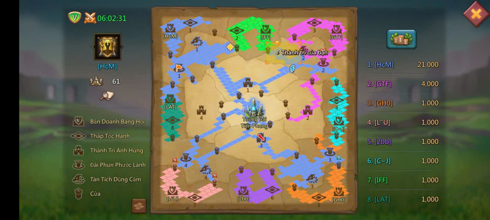

.jpg)
Giới thiệu về game
Đây là game chiến lược thời gian thực, cho phép mọi người xây dựng nên đế chế của riêng mình theo nhiều cách khác nhau.
Có người lựa chọn làm nông dân, chỉ phòng thủ khi họ thấy cần thiết, lại có những người tấn công vào lâu đài của người khác, cướp tài nguyên của họ để tăng cường sức mạnh cho lãnh địa của
.png)
Tính năng nổi bật
Đồ họa 3D
Đồ hoạ đẹp mắt, dễ nhìn, đơn giản nhưng hiệu quả
Cách chơi
Tuỳ theo cách chơi riêng của từng người, mỗi người sẽ có những cách chơi khác nhau, không giới hạn cách để làm
Hệ thống sự kiện đa dạng
Với các chế độ như Dragon Arena, Guild Expedition, KvK,...
Dragon Arena:
Đây là 1 chế độ, nới mà phải chiến đấu dành các cứ điểm được chỉ định trên bản đồ. Cứ cách 1 khoảng thời gian, đoàn lữ hành sẽ xuất hiện, bang hội nào chiếm được lữ điểm mà đoàn lữ hành đi qua thì sẽ được cộng 1 lượng điểm kha khá. Nhưng để vào được đấu trường này, người chới phải tuân thủ các điều kiện như sau:
- Có Lâu đài Lv17+
- Bẫy / Tường thành không bị hỏng
- Không có lính ở trong bệnh xá
- Không trong trạng thái cuồng chiến
Guild Expedition:
Đây là chế độ nơi bang hội của bạn sẽ chiến đấu với 7 bang hội khác để chiếm lính Tượng Đài Tiên Phong. Sẽ có những cứ điểm khác hỗ trợ cho bang hội nào chiếm được nó:
- Tháp Tốc Hành: Giúp bang hội chiếm được nó tăng 50% tốc độ di chuyển, chiếm được nó bang hội sẽ có 1000 điểm.
- Tàn tích dũng cảm: Giúp bang hội chiếm được nó tăng 20% DEF Quân đội, chiếm được nó bang hội sẽ có 1000 điểm.
- Suối Thánh: Giúp bang hội chiếm được nó tăng 20% HP Quân đội, chiếm được nó bang hội sẽ có 1000 điểm.
- Thành Trì Anh Hùng: Giúp bang hội chiếm được nó tăng 20% ATK Quân đội, chiếm được nó bang hội sẽ có 2000 điểm.
- Tháp Ma Pháp: Có cơ chế chiếm đặc biệt, bạn chỉ cần đặt trại là có thể chiếm được nó. Khi chiếm, cứ mỗi 5 phút nó sẽ tự động tấn công vào tượng đài tiên phong (nếu bang hội khác chiếm giữ) gây 1 lượng sát thương lên đó. Chiếm được nó không có điểm.
- Tượng Đài Tiên Phong: Mục tiêu chính của chế độ này, bang hội nào chiếm được nó sẽ nhận được 10000 điểm.
Ngoài ra, còn có các cứ điểm phụ mà người chơi buộc phải đánh chiếm để đi qua, ví dụ như Cửa Cơ Bản, Cửa Trung Gian, Cửa Nâng Cao, ....
